par Olivier MENUT
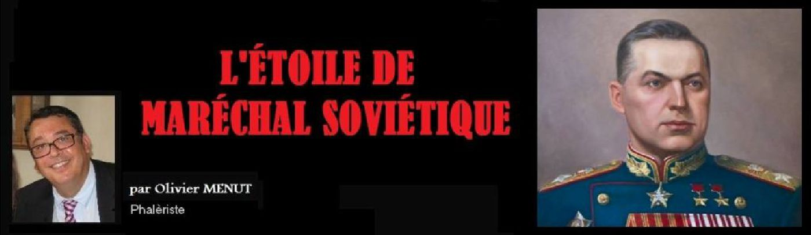
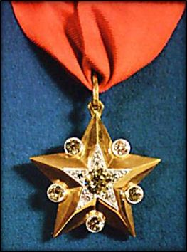
Il convient de rappeler au préalable, que 5 ans avant la création de cette distinction, soit le 22 septembre 1935, le Comité exécutif central et le Conseil des commissaires du peuple de l'URSS avaient proposés à Staline de créer le titre de « Maréchal de l’Union Soviétique » pour les chefs les plus méritants du nouveau régime.
Cinq personnage furent proposés pour cette première promotion de maréchaux (reconnaissables à leur grande étoile jaune sur leur revers d’uniforme) : Le Commissaire du peuple à la Défense Klim Vorochilov (1), le général de l'Armée rouge Alexander Yegorov (2), et trois commandants de la guerre civile : Vassili Blücher (3), Semyon Budyonny (4) et Mikhaïl Toukhatchevski (5).
Pour l’anecdote ces 3 derniers finiront emprisonnés par Staline, puis réhabilités sauf Blücher qui lui mourra en prison…
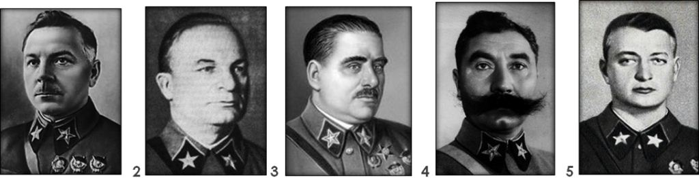
En 1943, le même Présidium honorera de ce titre prestigieux les grands généraux soviétique tels que : Gueorgui Joukov, Aleksandr Vasilevsky et naturellement Joseph Staline… En 1944 une nouvelle promotion de 6 chefs militaires seront fait maréchaux à leur tour. Il s’agit d’Ivan Koniev, de Leonid Govorov, de Konstantin Rokossovsky, de Rodion Malinovski, de Fyodor Tolbukhin et de Cyril Afanasievich Meretskov.
Après-guerre les maréchaux seront essentiellement de hauts fonctionnaires, militaire, du Pacte de Varsovie ou du Ministère de la Défense tels que Lavrenty Beria (1945, dépouillé de son rang en 1953), Vasily Sokolovsky (1946) et Nikolai Boulganine (1947 rétrogradé au grade de colonel-général en 1958).
Après l'effondrement de l'URSS, le titre de maréchal de l'Union soviétique sera aboli.
La création de la nouvelle distinction du « Maréchalat » s’accompagnait naturellement de la remise des plus hautes décorations et ordres de l’Union Soviétique à ces officiers hors classe. Toutefois, il apparut qu’une distinction spécifique réservée à ces chefs devait également leur être attribuée.
C’est pourquoi lors de la création d’une nouvelle promotion de maréchaux de l’Union Soviétique le 7 mai 1940 fut créé l’Etoile de Maréchal le 2 septembre 1940, soit 4 mois après.
L’Etoile de Maréchal n’est pas un ordre en soi, comme celui de la Victoire, de Lénine, du Drapeau rouge ou de l’étoile rouge, mais plutôt une distinction spécifique réservée aux seuls maréchaux des forces armées d’Union Soviétique.
L’insigne connaitra différentes évolutions et son champ d’attribution s’étendra.
Tout d’abord par décret du Soviet suprême d'URSS du 27 février 1943, il sera créé un modèle de l’Etoile de Maréchal d’un format plus petit et sans diamant par rapport à celui créé en 1940. Cet insigne n’était pas attribué aux maréchaux de l’Union Soviétique mais à certains officiers généraux de haut rang, tels que les maréchaux de l'Artillerie, de l'Air ou des Forces Blindées.
Le décret du Soviet suprême du 20 mars 1944, étendra cette distinction aux maréchaux des troupes du Génie et des Transmissions.
Puis un nouveau décret du Soviet suprême du 3 mars, 1955, décida que les personnes, qui se sont vu attribuer le titre d'amiral de la flotte de l'Union soviétique recevront également les insignes de l’Etoile de Maréchal.
Le 5 Juin, 1962, un nouveau décret élargi cette distinction aux amiraux de la flotte et en 1974 aux généraux d’Armée.
Le 15 avril 1981 tous les règlements antérieurs organisant l’Etoile de Maréchal, seront finalement regroupés dans un seul et même décret du Présidium du Soviet suprême.
Cette insigne sera attribuée pendant toute l’Union soviétique puis par la Fédération de Russie jusqu’au 21 janvier 1997, date de sa suppression définitive par le président Boris Eltsine.
L’insigne était remis à son titulaire par le Président du Présidium du Soviet Suprême d’URSS. Les titulaires de cet insigne, recevaient également un diplôme spécial du Présidium du Soviet suprême de l'URSS.
A la mort du récipiendaire (ou à sa rétrogradation…), il convient de noter que la famille devait retourner l’insigne au « Fonds des Diamants » situé à Moscou, au même titre que l'Ordre de la «Victoire» qui est également entouré de diamant. 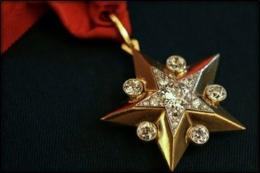 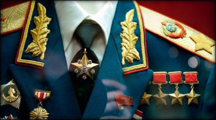
On peut assimiler l’Etoile de Maréchal soviétique au bâton de maréchal qui était traditionnellement remis solennellement aux maréchaux dans de nombreux pays d’Europe. Ce bâton symbolisait, selon la tradition romaine, le commandement qui était reconnu au général en chef de la part de son souverain ou empereur. La France a créé ce titre en 1185 et a 342 titres de maréchaux ou amiraux de France.
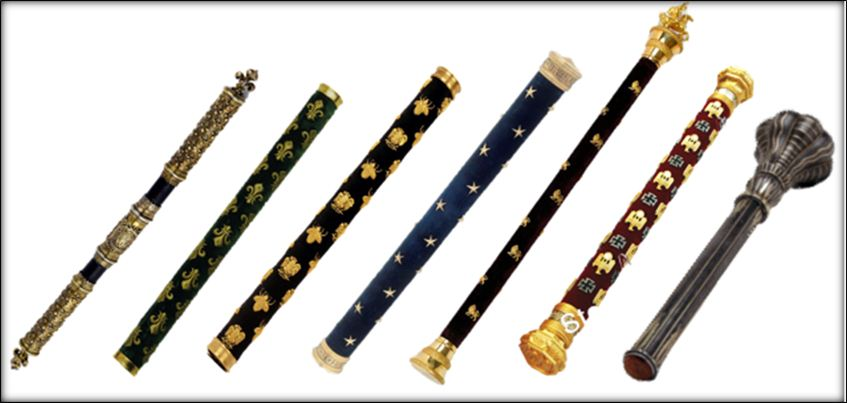
Les maréchaux de l’Union Soviétique avaient le privilège de se voir attribuer la jouissance d’une datcha d'Etat ainsi que d’une voiture officielle. Ils bénéficiaient également d’un chauffeur personnel, d’un adjudant et d’un officier des missions spéciales qui leurs étaient attachés. Les épouses des maréchaux (il n’existe pas de maréchal féminin) bénéficiaient également d’un véhicule pour leurs besoins personnels. De nos jours le dernier titulaire de l’insigne de l’Etoile de Maréchal, grand modèle (avec diamants) est le maréchal (ex-soviétique) Dmitry Yazov, depuis la mort en 2006 du seul et unique maréchal fait par la Fédération de Russie : le maréchal Igor Sergeev, ancien ministre de la défense. 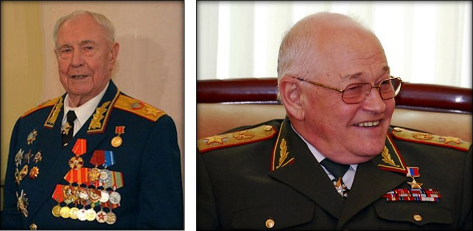
Comme nous l’avons dit l’Etoile de Maréchal existe en deux modèles différents. Un modèle (Grande Etoile) pour les Maréchaux de l’Union Soviétique et Amiraux de la Flotte Soviétique et un modèle (Petite Etoile) pour les généraux ou amiraux.
L’Étoile de Maréchal, ou d’Amiral, de l'Union soviétique, de grand-modèle avec diamants, est une étoile d'or à cinq branches sur laquelle est posée une étoile de platine, plus petite au milieu de laquelle est posé à son tour un diamant pesant 2,62 carats et autour duquel sont montés 25 diamants plus petits pour un total de 1,25 carats. Entre les bords des rayons de l’étoile d'or sont montés 5 diamants pesant 3,06 carats chacun. Le diamètre de l’étoile d'or est de 44,5 mm sur 23 mm et de 8 mm d’épaisseur. L’avers de l’étoile est plat. Le poids total de l’insigne est de 36,8 grammes. L'Etoile de Maréchal est reliée au cordon par une boucle anglée et ajouré reliée à une fixation semi-ovale de 14 mm, qui elle-même est traversée d’un ruban de couleur moiré rouge de 35 mm de large. L’insigne de cette étoile avec diamant a été réalisé en 200 exemplaires. 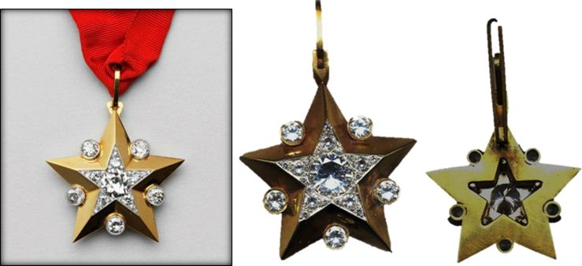
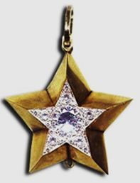 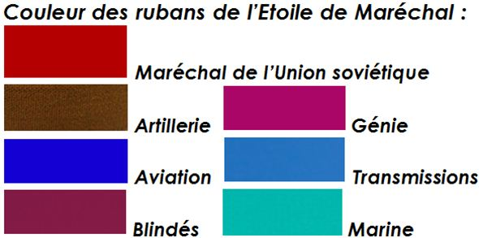
Etoile de maréchal « Petit modèle » (sans diamant)
Avant d’arrêter les modèles définitifs de l’insigne, sept différentes ébauches avaient été réalisées et présentées au maréchal Staline en 1940 qui les avaient rejetées les trouvant sans doute trop dispendieuses. Ces projets non retenus ont été conservées au Fonds des Diamants Russie, à Moscou. 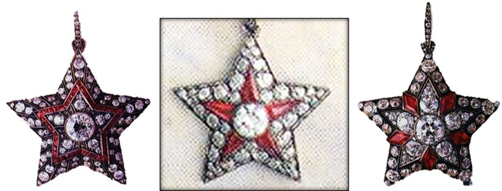 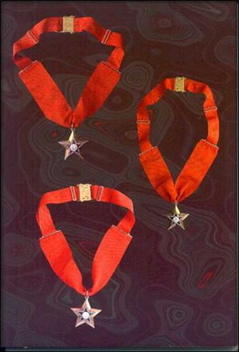 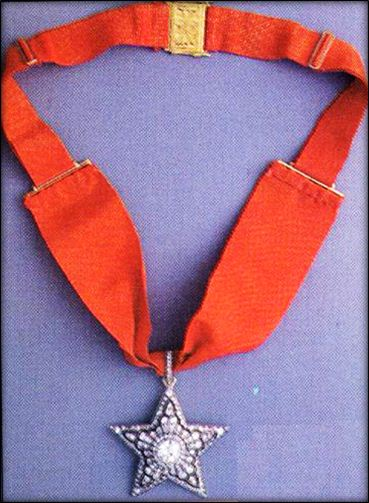 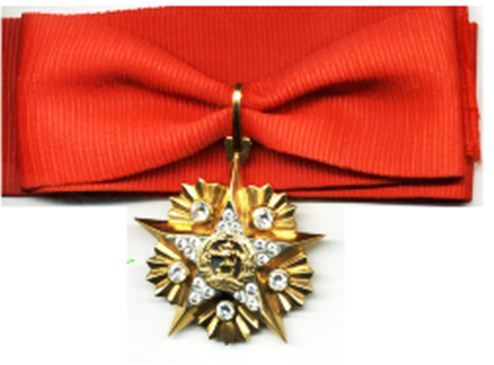 C’est Joseph Staline lui-même qui avait décidé de restaurer le titre de Maréchal qui existait sous le régime impérial (Cf photo du Maréchal Koutouzov, général russe des guerres napoléoniennes). Ce titre avait été supprimé pendant la révolution bolchévique. Sur la photo ci-dessous on constate qu’en plus de porter l’Etoile de Maréchal (photo), Staline portait également 2 étoiles de héros de l’Union soviétique, 3 ordres de Lénine, 3 ordres du drapeau Rouge, la médaille des 20 ans des forces armées, la médaille pour la défense de Moscou, la médaille de la victoire sur l’Allemagne et 2 plaques de l’ordre de la Victoire. A droite, il portait l’ordre de Souvorov. 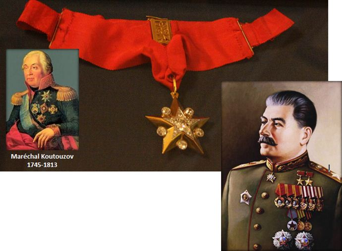 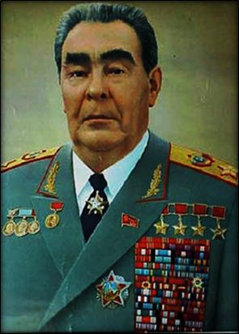 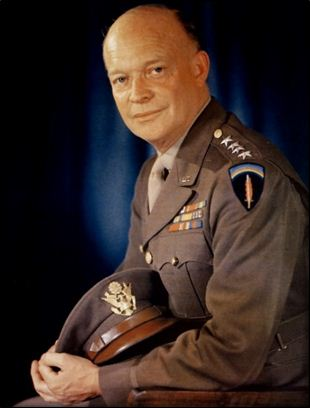 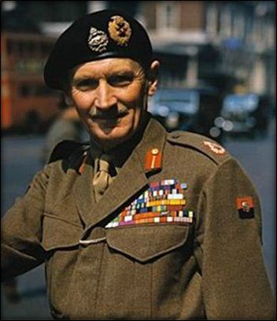 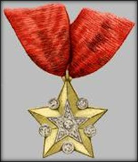 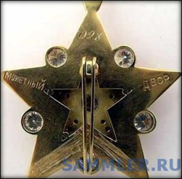 Dans tous les cas l’insigne ne se porte pas sur l’uniforme mais autour du cou ou sur la cravate. On notera cependant qu’il n’est jamais porté autour du cou pendant et extérieur comme n’importe quelle cravate de commandeur d’un ordre dans d’autres pays. Il est très rare de voir le ruban de l’Etoile comme sur ce maréchal (photo), qui a accroché son étoile avec son ruban sur sa cravate plutôt que d’utiliser une épingle ad hoc. Il est vrai que les règles de port des ordres est décorations en Union soviétique est très différent de ce qui se fait dans la plupart des autres pays du globe. On notera d’ailleurs que ces conditions de port seront le lot de tous les pays communistes (Chine, Cuba, Corée du Nord, Vietnam, etc…). Depuis l’avenant de la Fédération de Russie, le port des décorations s’est un peu plus « occidentalisé ». 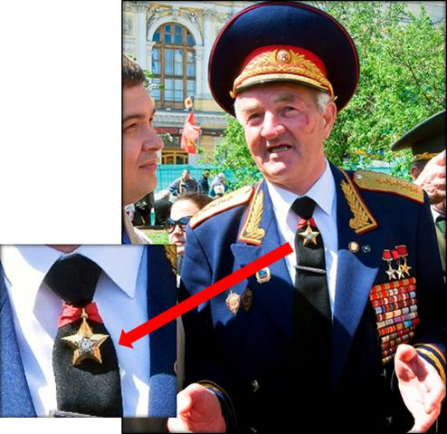 Enfin le récipiendaire reçoit avec son étoile un diplôme spécial tout à fait grandiose ! Le document présenté ci-dessous est le diplôme de l’Etoile de Maréchal, décerné à « l’as des as » de l’aviation soviétique, titulaire de 62 victoires aériennes, le maréchal Ivan Kojedoub (1920-1991). On constate que document est présenté dans un coffret capitonné rouge, et se présente sous forme d’un document relié de cuir rouge avec cachet de l’État gaufré d’un format de 18 X 12,5 cm. Le document est imprimé sur un parchemin épais écrit en noir et or recouvert du cachet et de la signature du Présidium. 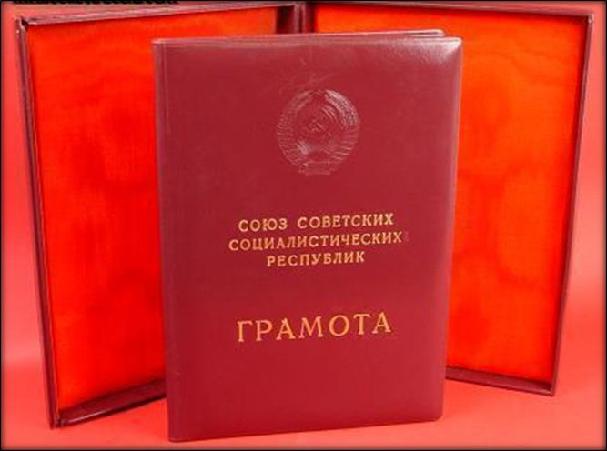 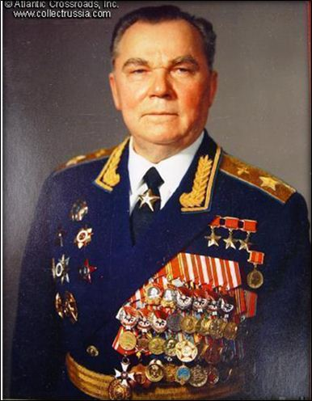 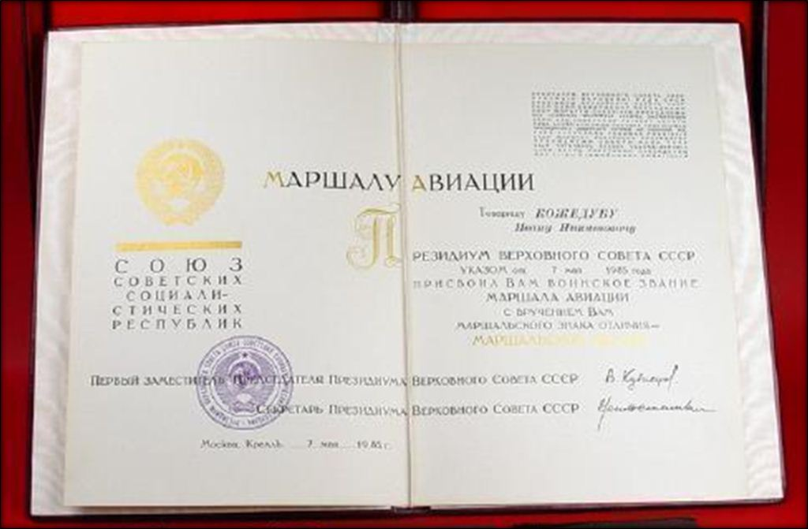 Nous présentons quelques portraits de maréchaux (ou amiraux) soviétiques décorés de l’Etoile, à différentes époques de l’Union soviétique : 1 - Konstanin Joukov, 2- Ivan Stepanovich Konev, 3 - Semyon Mikhailovich Budenny, 4 - Konstantin Konstantinovitch Rokossovski, 5 - Semion Timochenko, 6 - Amiral de la flotte soviétique Sergueï Gueorguievitch Gorchkov, 7 - Rodion Malinovski, 8 - Ivan Stépanovitch et 9 - Dmitri Oustinov (et ses 11 ordres de Lénine !). On notera que le ruban de l’Etoile de Maréchal n’est jamais visible. 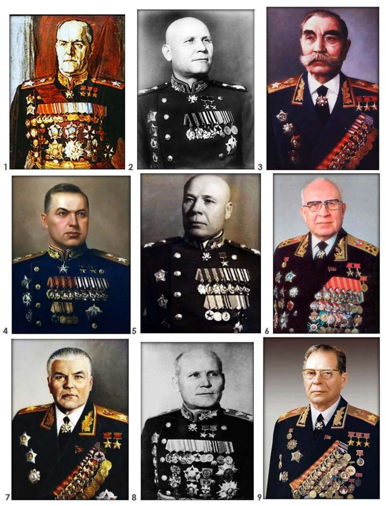 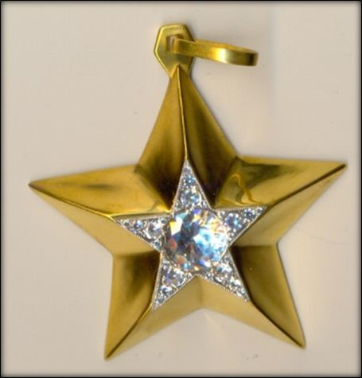 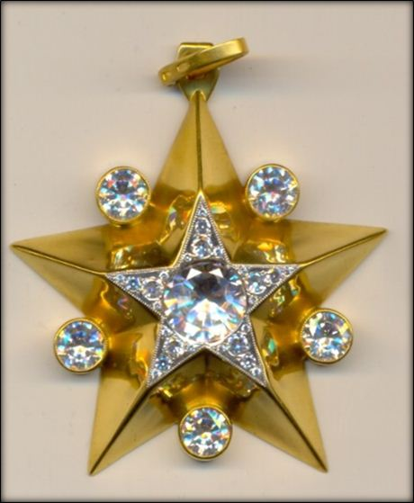 Ramené au poids de l’or et du platine ainsi qu’au cour du diamant (dépendant de sa pureté et de sa taille) on peut estimer qu’un tel bijou vaudrait plusieurs milliers de dollars, illustrant ainsi les grandes heures de l’empire soviétique. On comprend donc pourquoi la famille du titulaire de la distinction devait la rendre à l’Etat (auprès du Fonds des diamants de Moscou) car un tel bijou représentait sans doute une dépense important pour état ; montrant par la même l’importance que le pouvoir politique souhaiter donner à ses maréchaux (quitte d’ailleurs à les évincer quand leur popularité devenait trop gênante…). 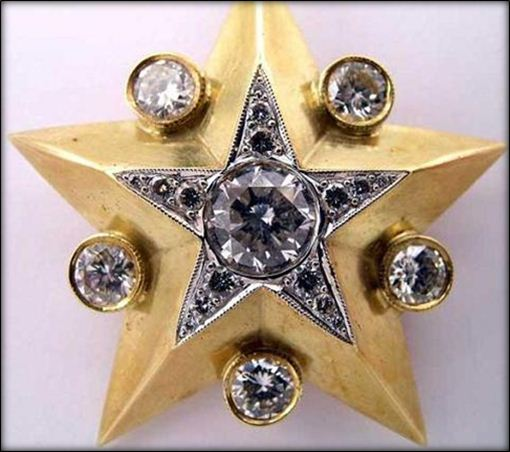 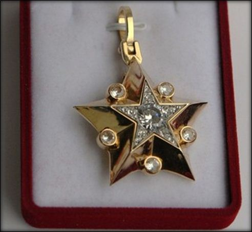 Cette anecdote nous démontre combien la période de la grande guerre patriotique est toujours aussi vivace dans l’esprit du peuple russe et combien cette mémoire est entretenue par l’actuelle Fédération de Russie au même titre d’ailleurs que son histoire issue de la Russie impériale, en témoigne la réhabilitation de Nicolas II et la canonisation de la famille impériale russe massacrée par les soviets le 17 Juillet 1918. 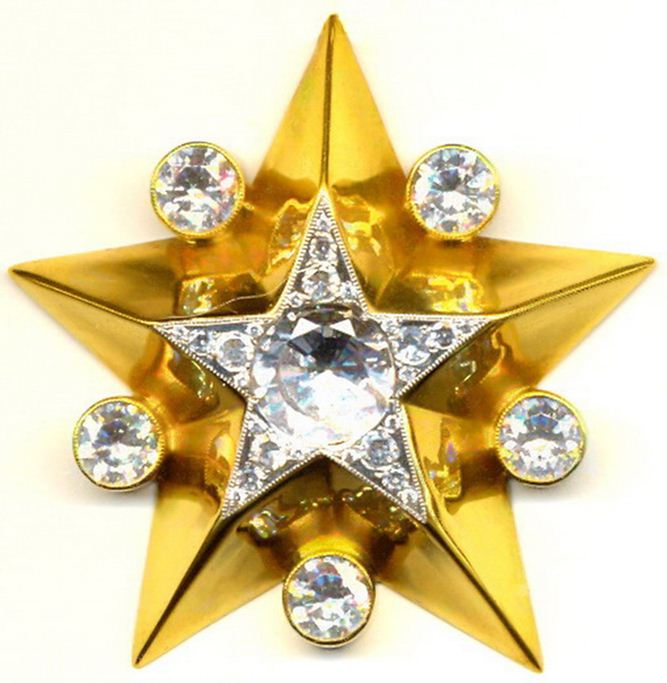 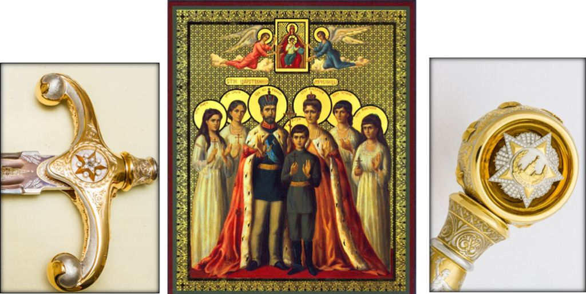 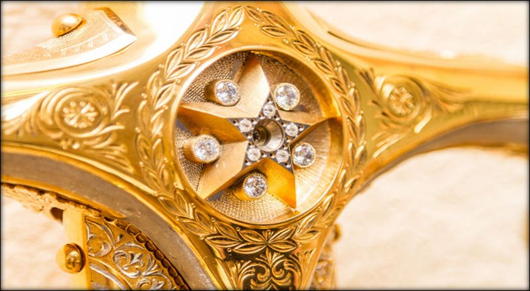 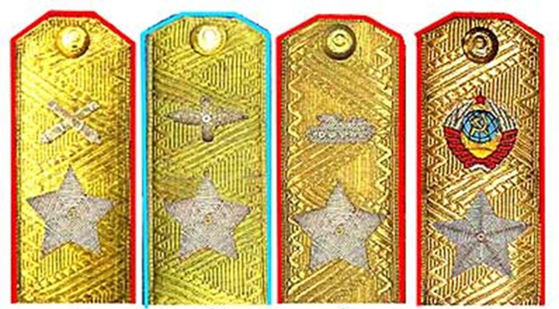 O.MENUT – 04/2016 MEDIAGRAPHIE http://svpressa.ru/war21/article/102428/ http://medalww.ru/nagrady-sssr/vysshie-stepeni-otlichiya-sssr/marshalskaya-zvezda/ http://rcross.livejournal.com/867329.html http://ria.ru/spravka/20100922/278036470.htmlQuelques maréchaux célèbres
Différentes façons de porter l’Etoile
Diplôme de l’Etoile de Maréchal
Quelques portraits de maréchaux portant l’Etoile
Un travail de joaillerie
Partager cette page